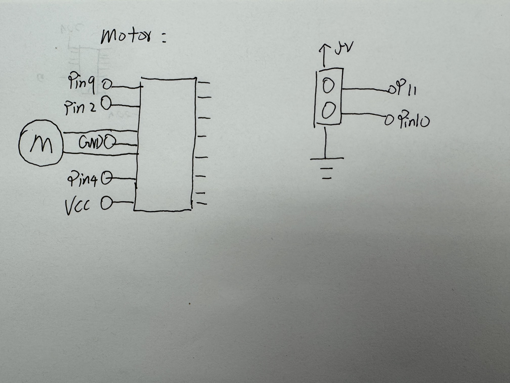
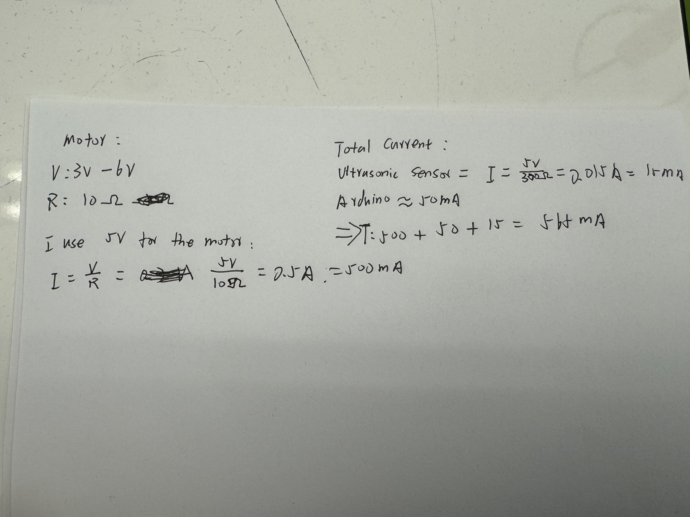
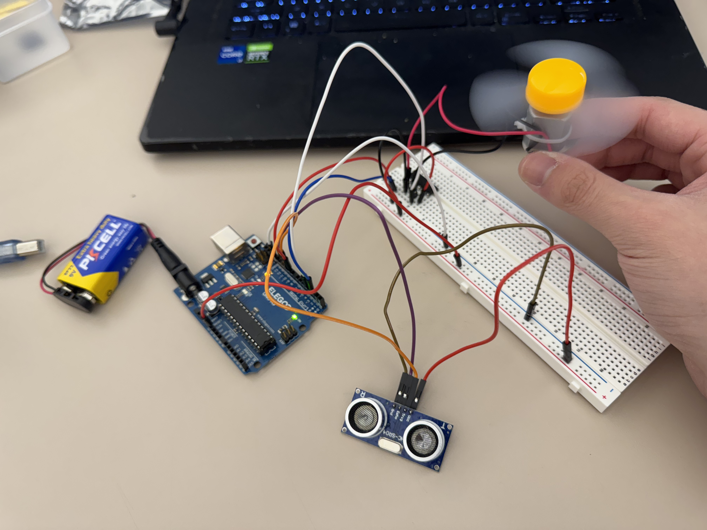
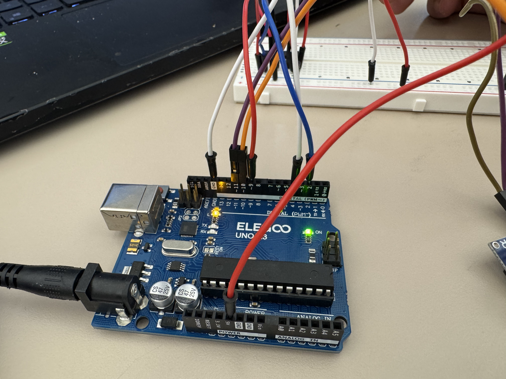
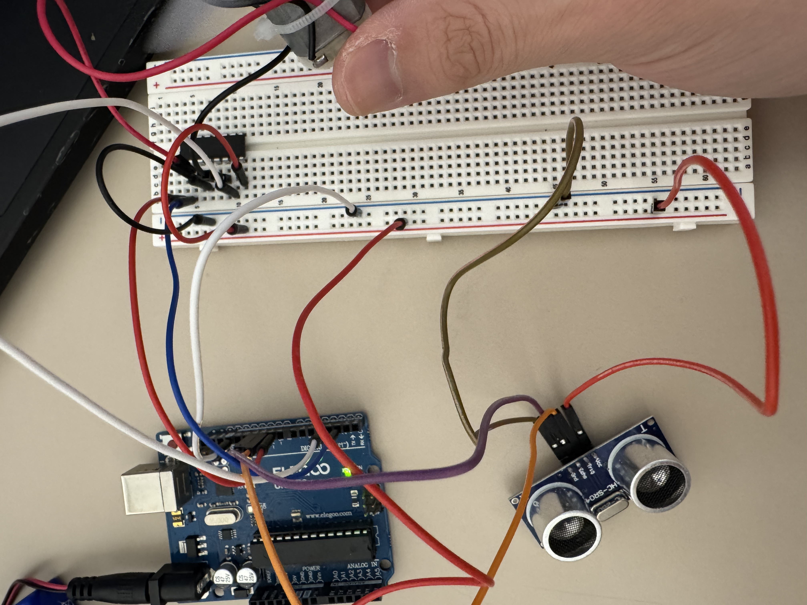
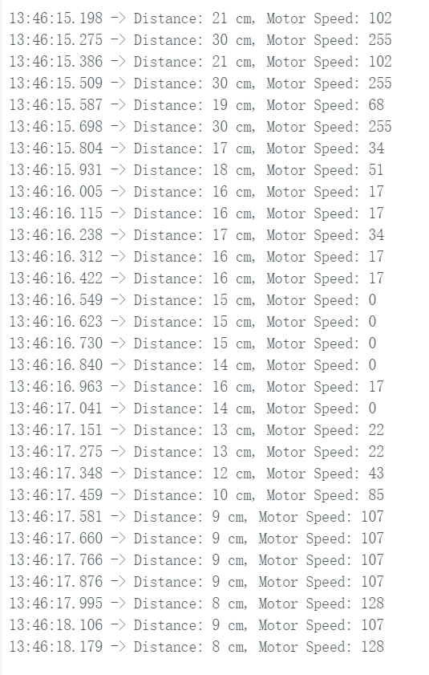
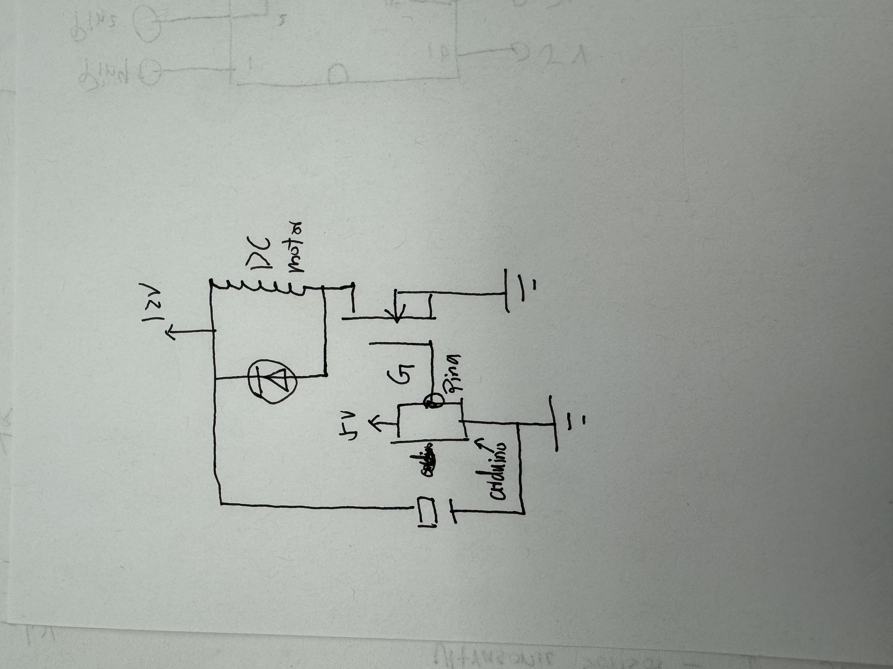
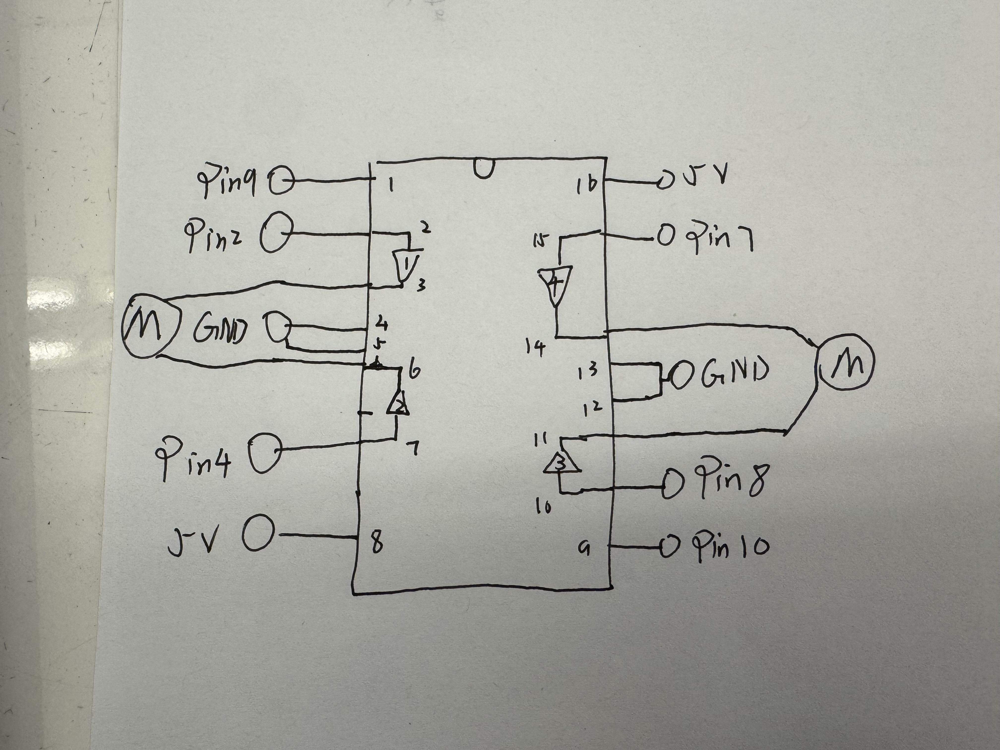

This is my circuit's operation

when my hand close to the sensor the fan generately go slow, and then the fan stop, and through other direction to be faster when my hand go closer
Here is all the documentation for assignment 5!
This is my schematic
I use a DC Motor to be the fan, and also use a ultrasonic sensor to contorl the wind, also use a N-MOSFET transistor to control the wind direction
This is my circuit
  ultrasonic sensor will contorl the wind, I set the max distance is 30cm, so when the use close to the sensor the clockwise decrease the wind to 15cm to stop, and keep close will spain counterclockwise faster til 2cm be 255 means the most fast for the fan
This is my firmware
#include // Library for Ultrasonic Sensor
// setup the ultrasonic sensor pin
#define TRIG_PIN 10 // pin for sending signal
#define ECHO_PIN 11 // pin for receiving signal
#define MAX_DISTANCE 30 // Max detection distance
// setup motor pins
int motorPin = 9; // Motor PWM pin
int pin2 = 2; // for different direction of the current
int pin7 = 4; // for different direction of the current
// Create ultrasonic sensor object
NewPing sonar(TRIG_PIN, ECHO_PIN, MAX_DISTANCE);
void setup() {
Serial.begin(9600); // serial communication
pinMode(pin2, OUTPUT); // Set pin as output
pinMode(pin7, OUTPUT); // Set pin as output
pinMode(motorPin, OUTPUT); // Set pin as output
}
void loop() {
int distance = sonar.ping_cm(); // measure distance in cm
int motorSpeed = 0; // default motor speed
if (distance == 0) {
distance = MAX_DISTANCE; // If no object detected, max distance
}
if (distance < 15) { // If object is close
digitalWrite(pin7, LOW); // Turn off pin7
digitalWrite(pin2, HIGH); // Turn on pin2
motorSpeed = map(distance, 2, 14, 255, 0); // map distance to motor speed (closer to faster)
}
else { // If object is far
digitalWrite(pin2, LOW); // Turn off pin2 make the motor to other direction
digitalWrite(pin7, HIGH); // Turn on pin7
motorSpeed = map(distance, 15, MAX_DISTANCE, 0, 255); // map distance to motor speed (farther to slower)
}
motorSpeed = constrain(motorSpeed, 0, 255); // limit motor speed between 0 and 255
analogWrite(motorPin, motorSpeed); // set motor speed
// Print sensor and motor speed to Serial Monitor
Serial.print("Distance: ");
Serial.print(distance);
Serial.print(" cm, Motor Speed: ");
Serial.println(motorSpeed);
delay(100); // short delay for easier read the information
}
This is my output from the serial monitor
the serical monitor show the sensor of receive distance, and also use more close from 30cm to 15cm will make the wind weaker, and when user from 14cm to 2cm will make the wind stronger
This is my circuit's operation
when my hand close to the sensor the fan generately go slow, and then the fan stop, and through other direction to be faster when my hand go closer
Additional questions:
Question 1:
The maximum continuous current between pin 2 and pin 3 is 20A.For short pulses, it can be 80A
Question 2:
Question 3:
